Diary Entry 12: Forbidden Zone The Death of 1,000 Pieces As we flew through the Forbidden Zone, we came upon a strange machine called the Sky Transporter. It immediately recognized us as intruders, and sealed itself. Its 8 keys separated from the main unit and relocated to different areas. I assumed to reactivate the machine, I would have to reassemble all of its keys. It was a grueling process, but we found all 8 keys and repositioned them back into the Sky Transporter. Once the keys were in place, the seal was finally broken and the machine commenced its reactivation process. The dragon shot a laser at the machine and we were pushed up into the air. Unbeknownst to us, Craymen's Elite Guard had been waiting close by. They descended right in front of us. It was Craymen's ship! I had finally caught up with him! Once we destroyed the Escorts, the main Flagship engaged us in battle. The battle soon came to an end as we heavily weakened the ship. I made my way to the main bridge only to find one man aboard. It was Craymen's second hand man! I asked him where Craymen was hiding. He replied by telling me I had fallen into their trap and that Craymen was already at the Tower. After our little conversation, he said "she" would finish me. Before I could comprehend what he meant exactly, an explosion blew me back and completely engulfed the man, ending his life instantly! As I recovered from my fall, I saw a girl and a black dragon appear before me. It was the girl from my vision! My dragon in an effort to protect me, shot its lasers at the black dragon. The girl's dragon just created a shield out of pure energy and the laser fire was deflected! I quickly jumped onto my dragon and we flew along side them. I didn't want to fight her but she said, "his enemy is my enemy." I asked her if she was referring to Craymen. She answered, with laser fire to my dragons body! Next, I tried to ask her why she was on Craymen's side. She didn't answer me and the dragon and I were soon caught up in a battle against the two. Once, we managed to weaken her dragon, they made their retreat. She said she would be back! We left the Forbidden Zone and made our way back to the caravan. 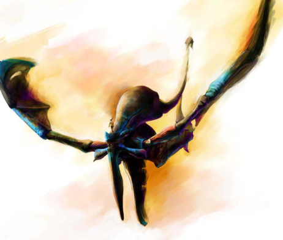 |
|
| Divine
Overview |
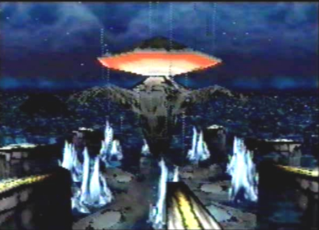 1. When you approach the Ancient Age machine, called the Sky Transporter, it will recognize you as an intruder and its 8 keys will separate from it, sealing the machine. |
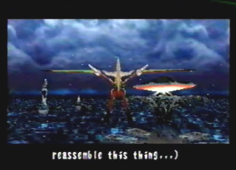 2. You must now reassemble the missing keys to reactivate the Sky Transporter. |
Sky Transporter Key Locations 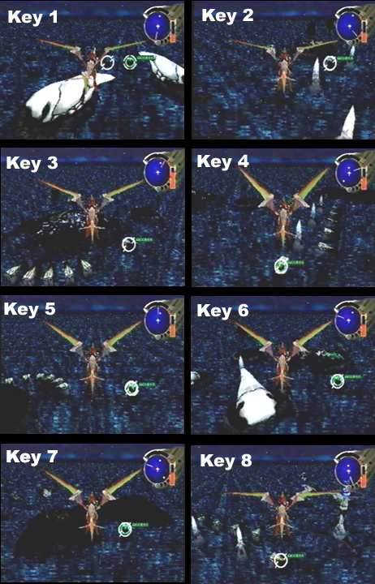 3. Seek out the 8 keys, their locations are shown above and can also be found on the map. |
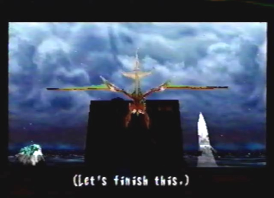 4. Try locking-on to one of the keys while directly below and in front of it. You will get an odd message from Edge saying "Let's finish this." Does this mean Edge is annoyed at "you," the player, or is he just mad at the dragon for obnoxiously staying in front of the key? You be the judge. |
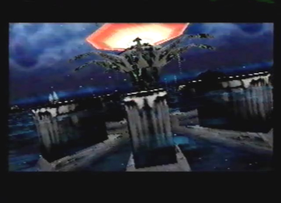 5. Once all the keys are in place, the Sky Transporter's seal is broken and it begins to spin. |
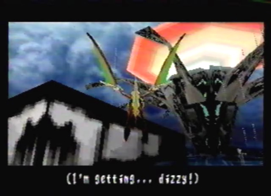 6. If you position the dragon inside and along the wall of one of the keys while it's spinning, you will get trapped and circle the Sky Transporter. This action triggers a message from Edge saying, "I'm getting... dizzy!" |
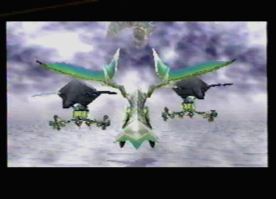 7. Once you lock-on and fire at the Sky Transporter, it will push you up into the air, where Craymen's Elite Guard is waiting to take you out! |
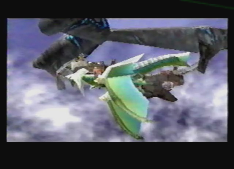 8. Once the Escorts are destroyed, the main Flagship will attempt to finish the job. |
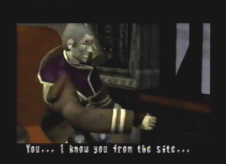 9. Once you heavily damage the Flagship, Edge will board the ship and enter the main bridge. Therein, he will find Arwen, Craymen's first officer. He tells Edge that he fell head on into a trap. |
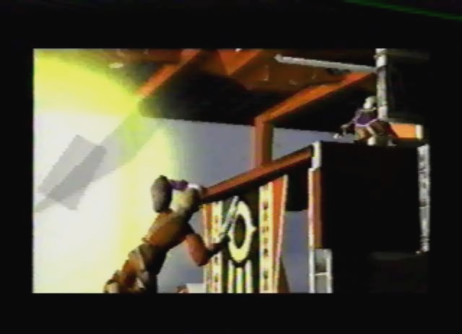 10. Suddenly, an immense explosion pushes Edge back and engulfs Arwen, taking his life in the process! |
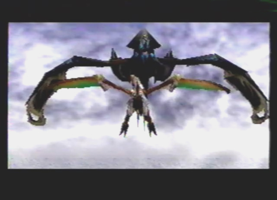 11. The explosion was caused by Azel and her dragon, Atolm. You have no choice but to do battle with her. |
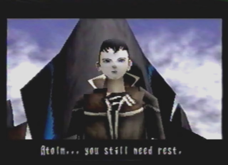 12. Once you defeat Atolm and Azel, they make their retreat. |
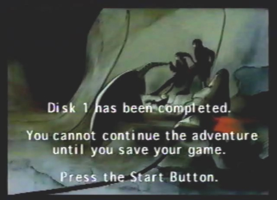 13. You have now finished disc 1 and will be prompted to save and insert disc 2. If you hold X, Y, Z together you can remove the text, allowing you to view the nice artwork. When you load up disc 2, you will appear at the World Map, your next destination is the Caravan. |